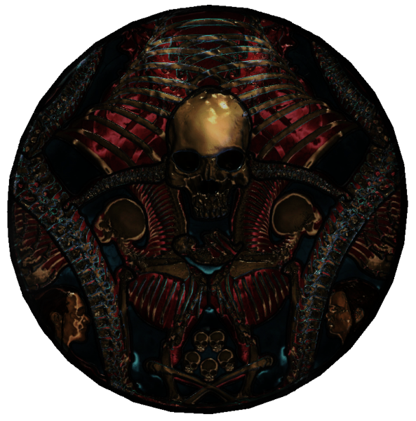

The Void
The realms of Oblivion, and the Daedra themselves, are linked to the Void. In the lore of the universe, the Void was created by the Original deities- Padomay and Anu. Padomay's soul eventually became Sithis, a being of pure nothingness- and the entity of the pure void. Sithis is said to have created Daedra- and together with his opposite, Anuiel, the soul of Anu, created the rest of the universe. The Void as such is important to the concept of the Daedra, who are supposedly from the Void- though of course, it is all up to debate what is true. Bethesda, as a company, are known for contradicting the past in their lore- where Cyrodiil was meant to be a sprawling jungle, and Skyrim was meant to be pure tundra.

The Common Insignia of Sithis- his 'emblem' displayed in the Dark Brotherhood Sanctuaries of Skyrim.
No personal data is collected by this website. No cookies are stored by this website. All rights to the Elder Scrolls franchise are reserved to Bethesda Studios. This is a non-profit fan page.